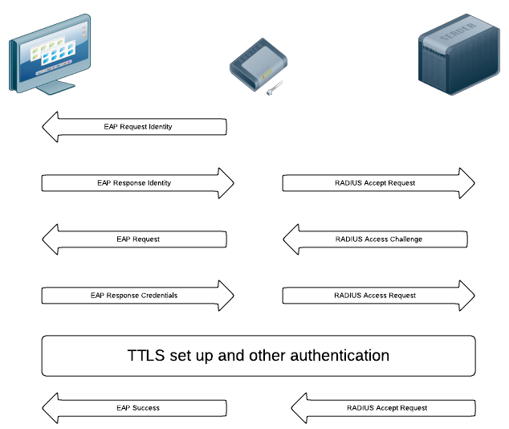

TechTalks — Eduroam in RoEduNet
Stas Sușcov
The Problem!
-
Current status and deployment workflow of classic wireless networks with large userbase
-
Takes lots of time and human resources, so we need to automate this thingy!
Main concerns
-
Deployment time
-
Security
-
Maintanence costs
-
Scalability
Tools
-
Linux/Unix environment with SSL/TLS support (mainly for certificate generation)
-
Radius server installed
-
Local LDAP or external LDAP alike servers (ActiveDirectory) for users/ACL
-
Equipment that supports Radius integration (cheapest might be Linksys)
Security Aspects
-
No more vulnerable authentication protocols with high probability data leaks (WEP/WPA-personal?!). Uses MS-CHAPv2 instead of PAP.
-
Usage of certificates, tunneling the data through a TTLS connection.
-
Authentication using username/password combination with ACL
-
Easy way to monitor user activity using flows/logs
Authentication Process

Maintanence costs
-
LDAP or alike servers are well integrated in a big number of CRM/Enterprise HR software solutions
-
Unix envronment maintanence (mostly to get the updates)
-
Most of the enterprise level network equipment already has support for Radius external authentication protocol
Scalability
-
Mainly LDAP or user credentials server is the biggest problem. This can be solved by replicating such databases.
-
Radius servers can be organized in a descentralized way, so they work not depending on database location or equipment positioning.
-
The overhead for the network equipment is zero!
Eduroam
-
Is a verified and confirmed network infrastructure for enterprise level organizations, that was started inside Geant
for education institutions.
-
It offers a set of documentation and support resources to deploy and help people adapt their current network.
-
It's a community of people with years of experience and background.
-
Deployed all over Europe.
-
Presence in Romania through RoEduNet and it's regional agencies.
About me
-
Worked for UTCN-NOC as part of RoEduNet team during ~2009...
-
Helped deploying current UTCN network infrastructure.
-
Patched Radius servers to make them use OpenSSL.
-
Wrote Eduroam DB monitoring tools.
-
Contact: stas@net.utcluj.ro